ひらがな文字盤 簡略版
ひらがなをクリックすると発音し文字が表示されます。機能をしぼってシンプルにしました。
ひらがな文字盤 簡略版
ひらがなをクリックすると発音し文字が表示されます。機能をしぼってシンプルにしました。その人はことばが不自由で、４つのことばを使えるVOCAを２台持っていました。2台目は５つ目のことばに挑戦するためです。その昔VOCAはハイテクで『素人』は文句を言わずに外国製の製品を購入しました。そうするのがどこでも普通のことでした。この人のお母さんは携帯電話も持っていました。VOCA２台と携帯をとっかえひっかえあれを出したりこれをしまったり、それはもう大変。荷物も多いし、お金もかかるし、これってやっぱりなんとかならないの？
話はここから始まりました。
エンチャント文字盤はパソコンでもスマホでもタブレットでも使えるコミュニケーションツールです。だから人によって使う機械が違ったり、外見やデザインやモニターの大きさが違ったり、好みや見え方などつかうひとにあわせて機械を選んだりできます。また文字盤の種類もいくつかありますので、表示されている文字や絵や聞こえる声や音もまた違ったりします。こんなところがこれまでのコミュニケーションエイドと違います。
人はみんな違う顔で違う声で違うことを考えて違うことを話します。
あの人とこの人が偶然似ていることはあるけれど、違っていても何も不思議ではありません。
そんな人間のコミュニケーションをたすける道具。それがエンチャント文字盤です。
いくつかサンプルを用意しました。まず試してください。使い方はとてもシンプル。
詳しい説明はこのページの後半にあります。よろしかったら試したあとでどうぞお読みください。
使い方
この文章の下のサンプルの項目に進み、説明文の左側の絵または青い文字をクリック（またはタッチ）すると始まります。
文字をクリック（またはタッチ）すると声が出ます。
戻るボタンでこのページに戻ってきます。
終了するときはブラウザを閉じてください。
気に入った文字盤は、ブックマークやお気に入りに登録すると次は短かい時間で開始できます。
画面の表示がおかしい場合は再読込（リロード）してください。
クマが歩く 画面をクリックするとクマが歩いたり止まったり、右へ行ったり左に行ったりします。 試運転、練習、画面の確認などにお使いください。
４つのことば ４種類の文字が表示され、クリックするとそのことばをしゃべります。
４つのことば２ページ ボタン操作でページ切り替えできます。２ページを切り替えて、合計８つのことばを使い分けできます。
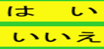４つのことば４ページ ボタン操作でページ切り替えできます。４ページを切り替えて、合計１６のことばを使い分けできます。
ひらがな文字盤 簡略版
ひらがなをクリックすると発音し文字が表示されます。機能をしぼってシンプルにしました。
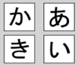ひらがな文字盤 標準版 ひらがなをクリックすると発音し文字が表示されます。促音、句読点、濁音、半濁音、消去、全消去、数字を表示できます。
 ひらがな文字盤 標準版 文章読み上げ機能付き
上記のひらがな文字盤 標準版に作成した文章を読み上げる機能を付けました。また合成音声を変更し、読み上げがより滑らかになりました。ただしブラウザは、Windows10では、edgeまたはchrome、Windows8，7，Linux，androidではchrome、Apple系でもchromeをお使いください。（ご注意 iPad、iphoneでsafariを使用すると声がでません。お試しはWindowsパソコンまたはandroidにブラウザはchromeをお使いになることをお勧めします。）（現状ではApple系でsafariでは声が出ない問題がわかりました。すみません訂正します。2017年11月7日）（iphone や ipadでは正常に声が出ないことがわかりました。ごめいわくをおかけしてすみませんでした。2017年11月21日）
ひらがな文字盤 標準版 文章読み上げ機能付き
上記のひらがな文字盤 標準版に作成した文章を読み上げる機能を付けました。また合成音声を変更し、読み上げがより滑らかになりました。ただしブラウザは、Windows10では、edgeまたはchrome、Windows8，7，Linux，androidではchrome、Apple系でもchromeをお使いください。（ご注意 iPad、iphoneでsafariを使用すると声がでません。お試しはWindowsパソコンまたはandroidにブラウザはchromeをお使いになることをお勧めします。）（現状ではApple系でsafariでは声が出ない問題がわかりました。すみません訂正します。2017年11月7日）（iphone や ipadでは正常に声が出ないことがわかりました。ごめいわくをおかけしてすみませんでした。2017年11月21日）
ひらがなカタカナ文字盤 標準版 文章読み上げ機能付き
ひらがな文字盤とカタカナ文字盤をきりかえて使えます。合成音声の品質はかなり高く、例えば『とまと』と『トマト』でちがうアクセントで発声します。
日本語に対応していないブラウザもあり状況はかなり複雑です。しかしchromeをお使いになると問題が少ないようです。またスマホやタブレットでは必要なファイルをダウンロードしインストールしているようでしゃべり始めるまでいくらか時間がかかります。以上、ご参考まで。
ひらがな文字盤 標準版 文章読み上げ機能付き iOS
上記のひらがな文字盤 標準版に作成した文章のみ合成音声で読み上げます。
ただし読み上げができるようになるまで、30秒から数分程度時間がかかることがあります。場合によっては数日以上かかることもあります。どうやら必要なモジュールを準備するのに時間がかかるようです。まず下の ipad iphone 発話訓練 をお勧めします。
またブラウザはchromeをお使いください。safariでは発声できません。
ひらがなカタカナ文字盤 標準版 文章読み上げ機能付き iOS
上記のひらがなカタカナ文字盤 標準版に作成した文章のみ合成音声で読み上げます。
以下は上の説明と同じです。
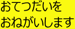かいものことば 不自由のある人がひとりで買い物をする時に使用することばをセットにしました。
まるばつ イエスノーの意思伝達のみを目的としたシンプルなコミュニケーションエイドです。わかりやすさとおもしろさを優先しました。
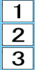いちにさん縦型 数字の意思伝達のシンプルなコミュニケーションエイドです。
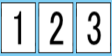いちにさん横型 数字の意思伝達のシンプルなコミュニケーションエイドです。
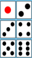１２３４５６縦型 数字の意思伝達のシンプルなコミュニケーションエイドです。
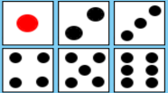１２３４５６横型 数字の意思伝達のシンプルなコミュニケーションエイドです。スマホ向きです。
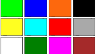12色 １２種類の色を押すと色の名前を読み上げ、文字を表示します。操作の練習などにどうぞ。
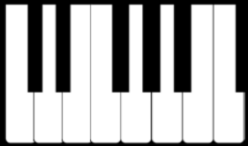ピアノ 画面の鍵盤を押すとピアノの音が出ます。操作の練習などにどうぞ。
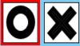ＯＸスキャン 上記の『ＯＸ まるばつ』はタッチ（クリック）でＯかＸを選びましたが、これをスキャン方式にしました。赤いわくに合わせて単にタッチ（クリック）すれば選べます。これによって動きが少なくても操作しやすくなります。この制作に際して仙台高等専門学校の竹島さん、児玉さんの協力を得ました。ありがとうございます。
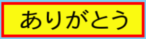４つのことば スキャン 上記の『VOCAのような４つのことば』をスキャン方式にしました。これによって動きが少なくても操作しやすくなります。この制作に際して仙台高等専門学校の竹島さん、児玉さんの協力を得ました。ありがとうございます。
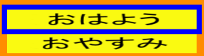４つのことば２ページスキャン 上記の『４つのことば２ページ』をスキャン方式にしました。スキャン操作で２枚の文字盤を切りかえて使えるようになりました。この制作に際して仙台高等専門学校の竹島さん、児玉さんの協力を得ました。ありがとうございます。
上記の『４つのことば４ページ』を2種類のスキャン方式にしました。どちらもスキャン操作で４枚の文字盤を切りかえて使えるようになりました。この制作に際して仙台高等専門学校の竹島さん、児玉さんの協力を得ました。ありがとうございます。
朝のＥテレ風、おなじ絵をえらぶゲームを画像ファイルの変更でサンプルを三種類作りました。リロード毎に問題が変わります。
時間の管理が苦手な人のためのタイマーです。それぞれ、3分、5分、10分、15分、30分、60分、120分間で赤い丸が徐々に消えます。みどりのボタンで開始、赤のボタンでやすみ、黄色のボタンでやすみおわりです。
時間の管理が苦手な人のためのタイマーです。それぞれ、3分、5分、10分、15分、30分間で上記の60分間タイマーと同じ速さで赤い扇型が徐々に消えます。（例、30分計は上記60分間タイマーの後半と同じ表示になります。）上記とこちら、二種類のうちわかりやすい方をお選びください。こちらもみどりのボタンで開始、赤のボタンでやすみ、黄色のボタンでやすみおわりです。
時間の管理が苦手な人のためのタイマーです。こどもたちに少し楽しんでもらえるように、電子音のかわりに動物の声で知らせます。 それぞれ、3分、5分、10分、15分、30分、60分、120分間で赤い丸が徐々に消えます。みどりのボタンで開始、赤のボタンでやすみ、黄色のボタンでやすみおわりです。
ひらがな文字盤の簡略版をスキャン操作できます。この制作に際して仙台高等専門学校の竹島さん、児玉さんの協力を得ました。ありがとうございます。
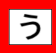ひらがな文字盤簡略版二段階スキャン0.8秒 スキャン1秒 スキャン2秒 スキャン3秒
ひらがな文字盤簡略版三段階スキャン0.8秒 スキャン1秒 スキャン2秒 スキャン3秒
ひらがな文字盤の標準版をスキャン操作できます。この制作に際して仙台高等専門学校の竹島さん、児玉さんの協力を得ました。ありがとうございます。
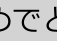ひらがな文字盤標準版二段階スキャン0.8秒 スキャン1秒 スキャン2秒 スキャン3秒
ひらがな文字盤標準版三段階スキャン0.8秒 スキャン1秒 スキャン2秒 スキャン3秒
enchant.jsの物理エンジンを使い、画像をリアルに動かし興味や関心を引き出す工夫に取り組んでいます。特にこどもさんの場合は飽きさせない工夫、集中を持続する工夫が必要です。おもしろいとかおかしいとはちがうアプローチを考えています。
このたびエンチャント文字盤にドロップスのシンボルを使わせていただけることになりました。おかげさまで見た目がぐっと改善されました。ドロップレット・プロジェクトの皆さん、どうもありがとうございます。こんなにたくさん描かれた方へ感謝。
シンボルを使うとわかりやすくなると思ってやってみたら、『こんにちは』と『さようなら』の区別がうまくつきません。そこでアニメーションにしてみました。シンボルは難しいところもあります。
このアニメーション化に際してドロップレット・プロジェクトさんから許可をいただいています。皆さんが同様の試みをする場合も事前にドロップレット・プロジェクトさんに確認し許可を得る必要があります。ご注意ください。
サンプル２番 4つのことば2ページをDrops化しました。
サンプル３番 4つのことば４ページをDrops化しました。
エンチャント文字盤を利用した よく見えない そんな場合の対応で紹介しましたエンチャント文字盤です。
さらに大きい表示二分割50音文字盤、日常会話文字盤付き 男声
さらに大きい表示二分割50音文字盤、日常会話文字盤付き 女声
エンチャント文字盤は、ホームページの閲覧に使うパソコンやスマホやタブレットなどのどれでも使うことができます。
通常のパソコンではマウスのクリックで、スマホやタブレットやタッチパネル付きパソコンではタッチで操作できます。
エンチャント文字盤を使うために特に何か手続きしたり、追加購入、インストール、出費は必要ありません。普段から使い慣れている人ならすぐつかえます。
エンチャント文字盤の一番目の特徴は、使いはじめるまでの準備や手間がとても少ないことです。
だから、生活の場面ごとに使用する機械を使い分けできます。例えば外出時は持ち運びの楽な小型軽量な機械、在宅時は見やすい大きなモニターの機械といった具合に使い分けもできます。また新しい機種に買い替えても同じように使えます。また誰かの機械をちょっと借りて試してみる場合も、そのまま返してOKです。使い慣れた今の機械、友達の機械、画面の大きな機械などいろいろすぐ試せます。念入りに試した後は使う人に合ったものを選んでください。たくさんの種類の商品から、モニタの大きさ、デザイン、重さなどいろいろ比べて選ぶことができます。
『その機械、その道具しか使えるものがない、手に入るものがない。福祉機器を自由に選べない。』こんな状況をなんとかしたい、選べるようにしたい。これがエンチャント文字盤の目標です。
そして、これまでのように試しに使ってみるためにその機械を業者さんから借りて用意する必要がありません。そしてもしその機械が生産中止、販売中止になっても他の会社のスマホやタブレットやパソコンなどに買い換えれば使い続けることができます。これでもう万が一の生産中止を心配する苦労が少なくなる、これがエンチャント文字盤の最も大きな特徴です。
エンチャント文字盤には大きく分けて2種類の使い方があります。まずこのページの例のようにインターネットで既成品の文字盤を選んで使う方法が１番目の方法です。この方法は操作や準備がとても簡単です。インストールもセットアップもアップデートもいりません。ホームページの閲覧に慣れているなら、特に新しく覚えることはありません。普段と同じように文字盤のホームページから選ぶだけで始まります。使い終われば閉じるだけ。まったく簡単です。また気に入ったエンチャント文字盤を、『お気に入り』（またはブックマーク）に登録しておけば、もっと手軽に短い時間で使いはじめることができるでしょう。
二番目の方法は、ちょっと特別です。他の人とちがう文字盤、見本にない文字盤、個性あふれる文字盤、 そして自分で作った手作りの文字盤が使いたい！！ こんな時はメモリに保存する使い方がお勧めです。この方法ならインターネット通信が使えない場所での利用もできます。またプライベートな文字、写真、音を使う場合にもよいでしょう。 基本的に簡単な学習とパソコン操作でオリジナルポストカードのように文字盤を手作りできるようになります。これで使う人の好みや用途に合わせてオリジナルを製作できます。 自分で作ったものは自由にコピーしてメールを使って誰かにあげることもできます。もらうこともできます。 お互い助けあうこともできます。
エンチャント文字盤は、ゲーム制作用に開発されたenchant.jsで作られています。この方法で作られたゲームがインターネット上に１０００種類以上公開されています。 パソコンやゲームに関心のある人たちはもしかしたら、困っている人たちの力になれるかもしれません。 ゲームに関係する知識や技能を身につけて活用すれば、人の役に立つことができるのです。
enchant.jsは特に高度な技能ではありません。基本さえおさえれば、日曜大工や家庭料理のように福祉機器が作れます。
もう２１世紀です。手作りだって２０世紀と違います。あなたもいかがですか？
さて始めましょう。
2016/08/18 公開 その後サンプルをどんどんどんどんどんどんどんどん追加
研究企画課リハ工学科にもどる